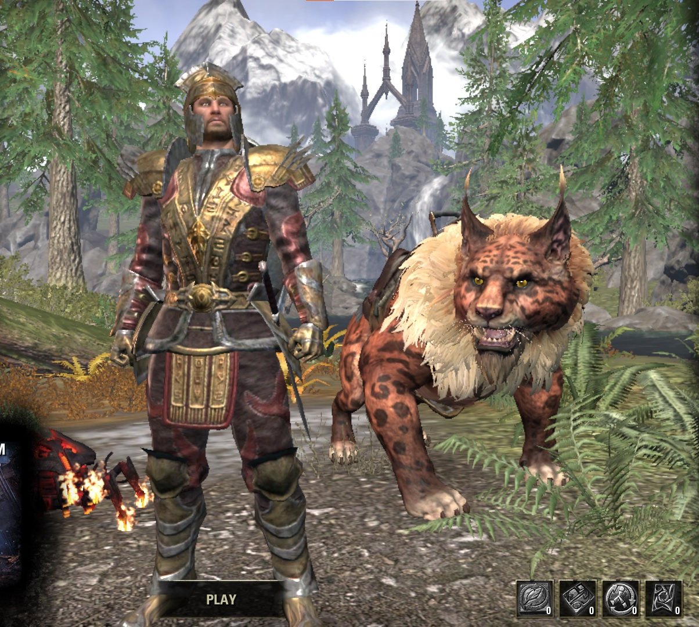

Quentavar
Quentavar is my Sorcerer DPS. He wears mothers sorrow, and law of julianos with the Valkyn Skoria helmet/shoulders. I am working on getting him False Gods and Maw of the Infernal. He currently does 21.7k dps, and he is my main. I am also leveling up his crafting abilities in hopes of getting him to be a master crafter. He is currently level 50 in all the crafts except for Provisioning, Enchanting, and Jewlery. (the image is a bit old, now he has a new mount (whispering claw senche-raht), and does not use a skin (since he has some markarth DLC face markings))
He wears the Dark Brotherhood Robes with the Markarth Face Markings. He has the Whispering Claw Senche raht as his mount, and he does not have a non-combat pet (since they all get in the way) He also uses the wolf hunter hat from from the werewolf dungeon (I cant remember the name)

Roggvir the Mighty
Roggvir is my tank. He is currently level 50 and I do many dungeons on him since tanks queue very quickly (Obviously I don't queue for vet ones). I am finding out that I actually like tanking, but I don't know if I prefer it over DPS. He will just be my tank, (not main quester or crafter) but I plan to get him doing trials someday.
Admiral Rubbish
Admiral rubbish is a Vampire Nightblade Assassin. He is currently level 50. He is an avid member of the thieves guild, and the dark brotherhood. I use him to gather mats since he is very fast due to his gear, and ability set. (Due to U27, he lost rapid manouver but I recently regained it.) He can also make gold fairly quickly if I were to sell all of the mats that I have gathered.

Hits-Head-on-Cabinet
This is my future stamblade. I want him to use a bow/bow setup. He is an argonian (should be obvious given the name) and he is only level 8 at the moment. I intend to get him to be doing trials in the future though. Sadly I do not have a picture for him yet.
Quaranar (Witch Farmer)
Quaranar is dps Warden (magden). He wears beginner gear with no monster healm (julianos/ms) and he is currently doing about 18.5k dps. For some reason, my sister calls him a "Witch Farmer" though..

Capt. Rubbish
Capt. Rubbish is my other nightblade. He was kind of a test nightblade and got to level 19 before I changed to Admiral Rubbish... EDIT: I actually never use him anymore and am considering deleting him, but I think that he looks cool so I'll keep the picture on the website.

Captain Rubbish
Captain Rubbish is my very first character. He is a level 11 templar and I only sometimes use him for writs (740G per day...) EDIT: I never use him anymore and are thinking of deleting him. I will only keep the image here since I think he looks very cool (and want to preserve this style for a future templar since I think it looks very cool.)